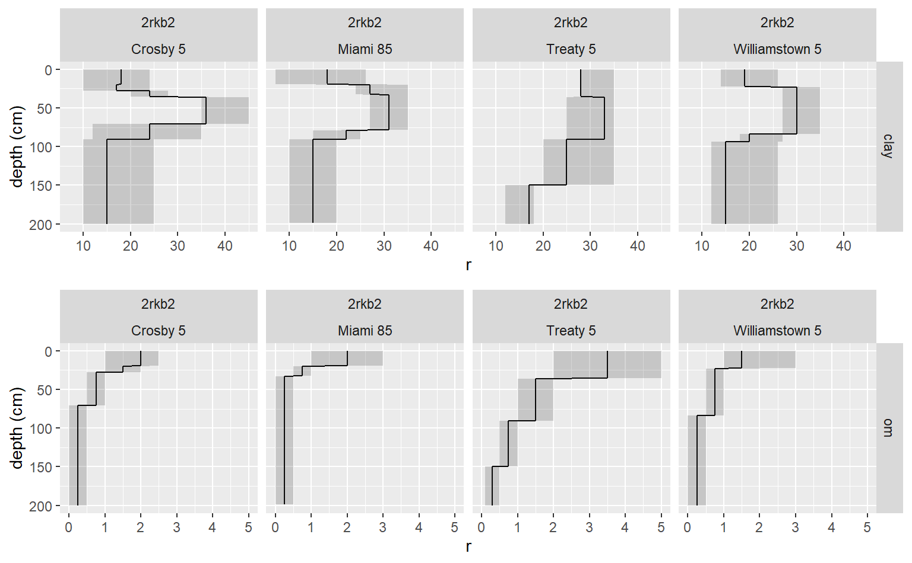

Download and Flatten Data from Soil Data Access
fetchSDA_component.RdFunctions to download and flatten commonly used tables and from Soil Data Access, and create soil profile collection objects (SPC).
fetchSDA(WHERE = NULL, duplicates = FALSE, childs = TRUE, nullFragsAreZero = TRUE, rmHzErrors = FALSE, droplevels = TRUE, stringsAsFactors = default.stringsAsFactors() ) get_mapunit_from_SDA(WHERE = NULL, droplevels = TRUE, stringsAsFactors = default.stringsAsFactors() ) get_component_from_SDA(WHERE = NULL, duplicates = FALSE, childs = TRUE, droplevels = TRUE, stringsAsFactors = default.stringsAsFactors() ) get_chorizon_from_SDA(WHERE = NULL, duplicates = FALSE, childs = TRUE, nullFragsAreZero = TRUE, droplevels = TRUE, stringsAsFactors = default.stringsAsFactors() ) get_cosoilmoist_from_SDA(WHERE = NULL, duplicates = FALSE, impute = TRUE, stringsAsFactors = default.stringsAsFactors() )
Arguments
| WHERE | text string formated as an SQL WHERE clause (default: FALSE) |
|---|---|
| duplicates | logical; if TRUE a record is returned for each unique mukey (may be many per nationalmusym) |
| childs | logical; if FALSE parent material and geomorphic child tables are not flattened and appended |
| impute | replace missing (i.e. NULL) values with "Not_Populated" for categorical data, or the "RV" for numeric data or 201 cm if the "RV" is also NULL (default: TRUE) |
| nullFragsAreZero | should fragment volumes of NULL be interpreted as 0? (default: TRUE), see details |
| rmHzErrors | should pedons with horizonation errors be removed from the results? (default: FALSE) |
| droplevels | logical: indicating whether to drop unused levels in classifying factors. This is useful when a class has large number of unused classes, which can waste space in tables and figures. |
| stringsAsFactors | logical: should character vectors be converted to factors? This argument is passed to the uncode() function. It does not convert those vectors that have set outside of uncode() (i.e. hard coded). The 'factory-fresh' default is TRUE, but this can be changed by setting options(stringsAsFactors = FALSE) |
Details
These functions return data from Soil Data Access with the use of a simple text string that formated as an SQL WHERE clause (e.g. WHERE = "areasymbol = 'IN001'". All functions are SQL querys that wrap around SDAquery() and format the data for analysis.
Beware SDA includes the data for both SSURGO and STATSGO2. The areasymbol for STATSGO2 is US. Therefore if data from just SSURGO is desired, set WHERE = "areareasymbol != 'US'".
If the duplicates argument is set to TRUE, duplicate components are returned. This is not necessary with data returned from NASIS, which has one unique national map unit. SDA has duplicate map national map units, one for each legend it exists in.
The value of nullFragsAreZero will have a significant impact on the rock fragment fractions returned by fetchSDA. Set nullFragsAreZero = FALSE in those cases where there are many data-gaps and NULL rock fragment values should be interpretated as NULLs. Set nullFragsAreZero = TRUE in those cases where NULL rock fragment values should be interpreted as 0.
Value
A dataframe or soil profile collection object.
See also
Examples
# \donttest{ if ( require(aqp) & require("ggplot2") & require("gridExtra") & require("viridis") ) { # query soil components by areasymbol and musym test = fetchSDA(WHERE = "areasymbol = 'IN005' AND musym = 'MnpB2'") # profile plot plot(test) # convert the data for depth plot clay_slice = horizons(slice(test, 0:200 ~ claytotal_l + claytotal_r + claytotal_h)) names(clay_slice) <- gsub("claytotal_", "", names(clay_slice)) om_slice = horizons(slice(test, 0:200 ~ om_l + om_r + om_h)) names(om_slice) = gsub("om_", "", names(om_slice)) test2 = rbind(data.frame(clay_slice, var = "clay"), data.frame(om_slice, var = "om") ) h = merge(test2, site(test)[c("nationalmusym", "cokey", "compname", "comppct_r")], by = "cokey", all.x = TRUE ) # depth plot of clay content by soil component gg_comp <- function(x) { ggplot(x) + geom_line(aes(y = r, x = hzdept_r)) + geom_line(aes(y = r, x = hzdept_r)) + geom_ribbon(aes(ymin = l, ymax = h, x = hzdept_r), alpha = 0.2) + xlim(200, 0) + xlab("depth (cm)") + facet_grid(var ~ nationalmusym + paste(compname, comppct_r)) + coord_flip() } g1 <- gg_comp(subset(h, var == "clay")) g2 <- gg_comp(subset(h, var == "om")) grid.arrange(g1, g2) # query cosoilmoist (e.g. water table data) by mukey x <- get_cosoilmoist_from_SDA(WHERE = "mukey = '1395352'") ggplot(x, aes(x = as.integer(month), y = dept_r, lty = status)) + geom_rect(aes(xmin = as.integer(month), xmax = as.integer(month) + 1, ymin = 0, ymax = max(x$depb_r), fill = flodfreqcl)) + geom_line(cex = 1) + geom_point() + geom_ribbon(aes(ymin = dept_l, ymax = dept_h), alpha = 0.2) + ylim(max(x$depb_r), 0) + xlab("month") + ylab("depth (cm)") + scale_x_continuous(breaks = 1:12, labels = month.abb, name="Month") + facet_wrap(~ paste0(compname, ' (', comppct_r , ')')) + ggtitle(paste0(x$nationalmusym[1], ': Water Table Levels from Component Soil Moisture Month Data')) # query all Miami major components s <- get_component_from_SDA(WHERE = "compname = 'Miami' \n AND majcompflag = 'Yes' AND areasymbol != 'US'") # landform vs 3-D morphometry test <- { subset(s, ! is.na(landform) | ! is.na(geompos)) ->.; split(., .$drainagecl, drop = TRUE) ->.; lapply(., function(x) { test = data.frame() test = as.data.frame(table(x$landform, x$geompos)) test$compname = x$compname[1] test$drainagecl = x$drainagecl[1] names(test)[1:2] <- c("landform", "geompos") return(test) }) ->.; do.call("rbind", .) ->.; .[.$Freq > 0, ] ->.; within(., { landform = reorder(factor(landform), Freq, max) geompos = reorder(factor(geompos), Freq, max) geompos = factor(geompos, levels = rev(levels(geompos))) }) ->.; } test$Freq2 <- cut(test$Freq, breaks = c(0, 5, 10, 25, 50, 100, 150), labels = c("<5", "5-10", "10-25", "25-50", "50-100", "100-150") ) ggplot(test, aes(x = geompos, y = landform, fill = Freq2)) + geom_tile(alpha = 0.5) + facet_wrap(~ paste0(compname, "\n", drainagecl)) + scale_fill_viridis(discrete = TRUE) + theme(aspect.ratio = 1, axis.text.x = element_text(angle = 45, hjust = 1, vjust = 1)) + ggtitle("Landform vs 3-D Morphometry for Miami Major Components on SDA") }#>#> Warning: package 'viridis' was built under R version 3.5.3#>#> Warning: package 'viridisLite' was built under R version 3.5.3#>#>#>#>#>#>#>#>#>#>#># }